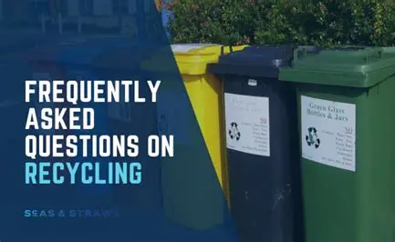

1. What material can I recycle?
You can recycle waste material such as paper, cardboard, plastic, glass and metal.
2. Is there a cost for recycling services?
Some services are free, while others may have a small fee depending on the type and quantity of materials.
3. Can I earn money from recycling?
In some cases, we offer a small payment for certain recyclable materials such as metals or larger quantities.
4. What are your business hours?
Our business hours are Monday to Friday, 09:00 AM - 6:00 PM. We may have limited hours on weekends and public holidays.